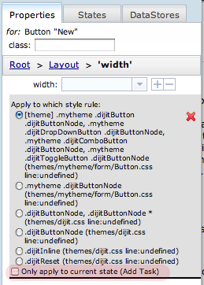

The Scenes palette is for creating application states for your page/application. Every page has a Normal state by default. This is the state that your page is first displayed in when it is brought up in the browser. You can add additional states to be used for interactive pages. Then you can configure a widget event property, such as the onclick event for a Button, to switch the page into the new state. In the new state you can set the visibility of various widgets to provide an interactive experience for the user. For example, you may want to display a dialog box in the new state that was previously hidden in the Normal state.
Follow these instructions to create a new state:
To delete a state, select the state by clicking on it, then click on the minus icon in the Scenes palette toolbar.
You select a state by clicking on it in the Scenes palette.
By default, all property changes made in the Properties palette will apply to all states. If any state other than "Normal" is selected in the Scenes palette, an additional checkbox appears at the bottom of the Detailed CSS panes on the Properties palette that allows property changes to apply only to the currently selected state rather than all states:

See About Application States for more information on working with states.